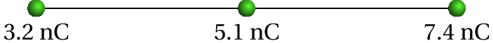
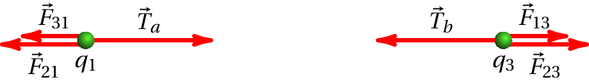
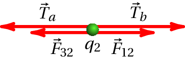
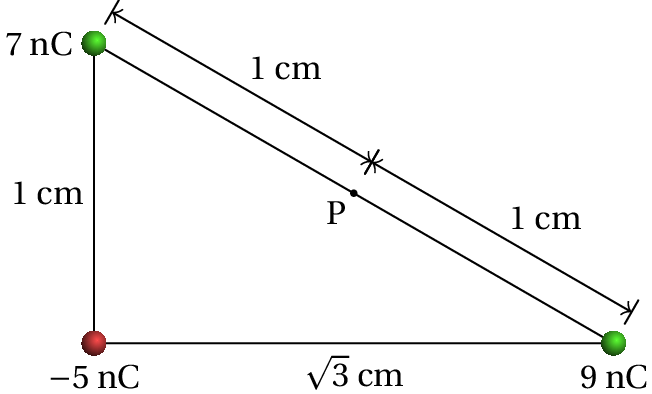
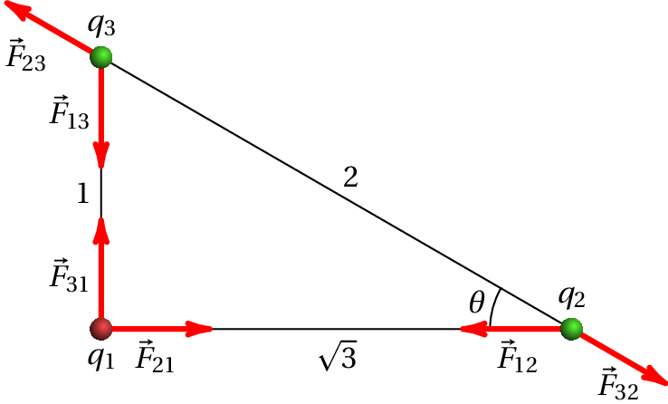
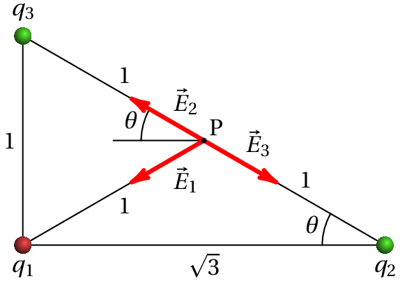

Uma lâmina de acetato, eletrizada por fricção, coloca-se 1 cm acima de uma mesa onde há vários quadrados de papel, cada um com 0.5 cm de lado. Observa-se que alguns pedaços de papel saltam, ficando colados ao acetato. Faça uma estimativa da ordem de grandeza da carga do acetato, admitindo que uma carga idêntica e de sinal oposto é induzida em cada pedaço de papel e sabendo que o papel usado tem 80 g/m2.
A área de cada pedaço de papel, em metros quadrados, multiplicada por 80 dará o valor da sua massa em gramas. Converte-se essa massa para quilogramas e multiplica-se pela aceleração da gravidade, em metros sobre segundo quadrado (9.8), para obter o peso do pedaço de papel em newton. Essas contas podem ser feitas no Maxima, armazenando o valor obtido na variável :
Admitindo que os valores absolutos das cargas no acetato e no papel são , obtém-se a expressão do módulo da força eletrostática entre eles, , em função de , quando a distância entre o acetato e o papel for de 1 cm, usando a lei de Coulomb (unidades SI):
A força elétrica sobre o papel, , atrativa, é vertical e para cima e o peso é no sentido oposto. Se a distância fosse maior que 1 cm, essa força seria menor. Como tal, quando o acetato está afastado do papel, é menor que e a força resultante, para baixo, mantém o papel em contacto com a mesa (há reação normal da mesa sobre o papel). Quando a distância for menor que 1 cm, é maior que produzindo força resultante para cima, que faz com que o papel salte colando-se ao acetato. Conclui-se então que a 1 cm de distância é quando os módulos das duas forças calculadas acima, e , são iguais. Basta então resolver a equação para encontrar o valor de
Aqui interessa apenas a solução positiva, porque representava ou valor absoluto das cargas. A conclusão é que a ordem de grandeza da carga é 10-10 C.
Comentários: A lei de Coulomb é valida apenas para a força entre duas cargas pontuais. A carga distribuída sobre o acetato, a 1 cm de distância do papel, não pode ser considerada uma carga pontual. E no papel, com carga neutra, em vez de cargas pontuais temos pequenos dipolos elétricos. No entanto, como pretendíamos apenas ter uma estimativa da ordem de grandeza das cargas envolvidas, foram feitas essas aproximações tão rudimentares. Determinar de forma mais precisa a força entre o acetato e o papel, em função da carga no acetato, é um problema muito mais complicado.
A soma dos valores de duas cargas pontuais e é µC. Quando estão afastadas 3 m entre si, o módulo da força exercida por cada uma delas sobre a outra é 24 mN. Determine os valores de e , se: (a) Ambas cargas são positivas. (b) Uma das cargas é positiva e a outra negativa.
Para poder usar os números simples do enunciado (10 e 3), optaremos por resolver o problema com as mesmas unidades usadas no enunciado: cargas em µC, distâncias em metros e forças em mN. Como tal, o valor que deveremos usar para a constante de Coulomb será:
A primeira condição, nas unidades escolhidas, é:
Observe-se que nessa equação as cargas e poderão ter valores positivos ou negativos.
(a) Se as duas cargas são positivas, o produto entre elas, , também é positivo. Como tal, na lei de Coulomb o produto dos valores absolutos das cargas pode ser substituído pelo produto das cargas: , e a condição para que o módulo da força seja 24 mN é:
Resolvendo as duas condições encontram-se os valores das cargas
(b) Quando os sinais das cargas são opostos, será negativo. Como tal, o produto dos valores absolutos deverá ser substituído por: , e a condição para a força é
os valores das cargas são então
As duas soluções são equivalentes, já que tanto faz dizer que é a carga positiva ou a negativa.
Três cargas pontuais estão ligadas por dois fios isoladores de 2.65 cm cada (ver figura). Calcule a tensão em cada fio.
Sobre cada uma das partículas atuam forças elétricas e tensões nos fios aos que estejam ligadas. Como este sistema está em equilíbrio, a força resultante sobre cada uma das 3 partículas deverá ser nula. Como tal, temos 3 condições de equilíbrio com apenas 2 incógnitas, que são as tensões nos dois fios.
Basta então considerar apenas as condições de equilíbrio para duas das partículas. Os diagramas de forças para as cargas de 3.2 nC e 7.4 nC (designadas de e ) são os seguintes:
onde é a tensão no fio do lado esquerdo e a tensão no fio do lado direito. Observe-se que não está em contacto com o fio da direita e, por isso, não atua sobre essa partícula. De forma análoga para . No entanto, as forças elétricas atuam à distância, sem ter de existir contacto entre as partículas; sobre cada uma das 3 partículas atuam as forças elétricas produzidas pelas outras duas partículas.
A condição de equilíbrio para a carga é
Como tal, a tensão no fio do lado esquerdo é (unidades SI):
A condição de equilíbrio para a carga é
que conduz à tensão no fio do lado direito:
As unidades dessas duas forças são newton, porque foram usadas unidades SI.
Se tivéssemos optado por usar a condição de equilíbrio para a partícula , no diagrama das forças há que ter em conta que atuam as tensões dos dois fios, porque essa partícula está em contacto com os dois fios:
E a respetiva condição de equilíbrio é
equação essa que podia ter sido resolvida em simultâneo com alguma das duas equações para ou , obtendo-se a mesma resposta, já que esta terceira condição obtém-se subtraindo as duas primeiras condições, e tendo em conta que para quaisquer índices e , é igual a .
Determine a força elétrica resultante sobre cada uma das cargas representadas na figura e o campo elétrico produzido pelas 3 cargas no ponto P.
Usando as unidades do problema (nC e cm), a constante será:
Ou seja, o valor da constante será 0.09, as forças obtidas estarão em mN e o campo em mN/nC, que é equivalente a N/µC.
(a) A figura seguinte mostra os três diagramas de forças para as três partículas, admitindo que a carga é a de nC, a carga é a de 9 nC e é a de 7 nC.
Em cada vetor o primeiro índice indica o número da carga que produz a força, e o segundo índice é o número da carga na qual atua essa força. As forças elétricas verificam a lei de ação e reação: , e em módulo, .
A lei de Coulomb permite calcular os módulos das seis forças no diagrama; usando as unidades escolhidas,
Observando a figura, conclui-se que o cosseno e o seno do ângulo são:
Usando listas para representar as componentes dos vetores, com eixo dos de para e eixo dos de para , as forças resultantes, , sobre cada uma das três cargas obtêm-se observando o diagrama das forças:
Resumindo, as forças que atuam sobre as 3 cargas são, em mN,
(b) O módulo do campo produzido por cada carga pontual é
onde é a distância desde a carga até o ponto onde se calcula o campo. As cargas e , positivas, produzem campos repulsivos e a carga , negativa, produz campo atrativo.
Os vetores dos campos produzidos pelas 3 cargas no ponto P são então como mostra a figura seguinte. 
Como o ponto P está no meio da hipotenusa, as distâncias desde P até às cargas e são iguais a 1. E como a projeção da hipotenusa na base do triângulo é o segmento entre e , a projeção do ponto P está no meio desse segmento e a distância desde P até à carga também é igual a 1: e, com as unidades escolhidas,
Observando o diagrama dos campos, as componentes vetoriais dos 3 campos são:
O campo total em P é a soma desses 3 vetores. Usando os valores de e já armazenados na alínea anterior nas variáveis seno e cosseno do Maxima, obtém-se:
Isto é, o campo no ponto P, em unidades de N/µC, é: